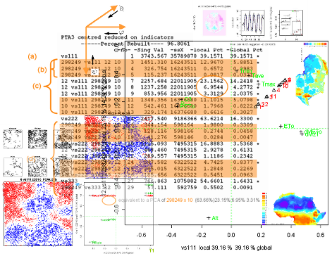

A multiway method to decompose a tensor (array) of any order, as a generalisation of SVD also supporting non-identity metrics and penalisations. 2-way SVD with these extensions is also available. The package includes also some other multiway methods: PCAn (Tucker-n) and PARAFAC/CANDECOMP with these extensions. |
 |
| PTAk general | Purposes of the package |
| functions /UML structure | description of the structure |
| license definition | other useful things |
| maintainer website | other useful things |